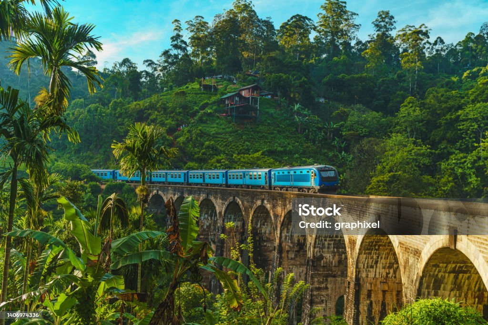

Nebuvę Šri Lankoje galbūt nusistebės, tačiau Šri Lanka tikrai nėra civilizacijos nepaliestas kraštas. Saloje, kuri kadaise buvo britų kolonija, stipriai jaučiami anglų kolonistų pėdsakai - eismas vyksta kairiąja kelio puse, angliškai šneka tiek jaunas, tiek senas, o britų pasodintų arbatkrūmių dėka, Šri Lanka šiuo metu yra antra pasaulyje pagal užauginamos arbatos kiekį!
Šioje saloje žmonės visuomet yra linksmi, besišypsantys ir paslaugūs. Tiesa - to reikalauja budistų tikėjimas. Temperatūra čia visuomet gana aukšta, todėl apsidžiaugsite lietuvišką darganą iškeitę į saulėtą Indijos vandenyno krantą!
